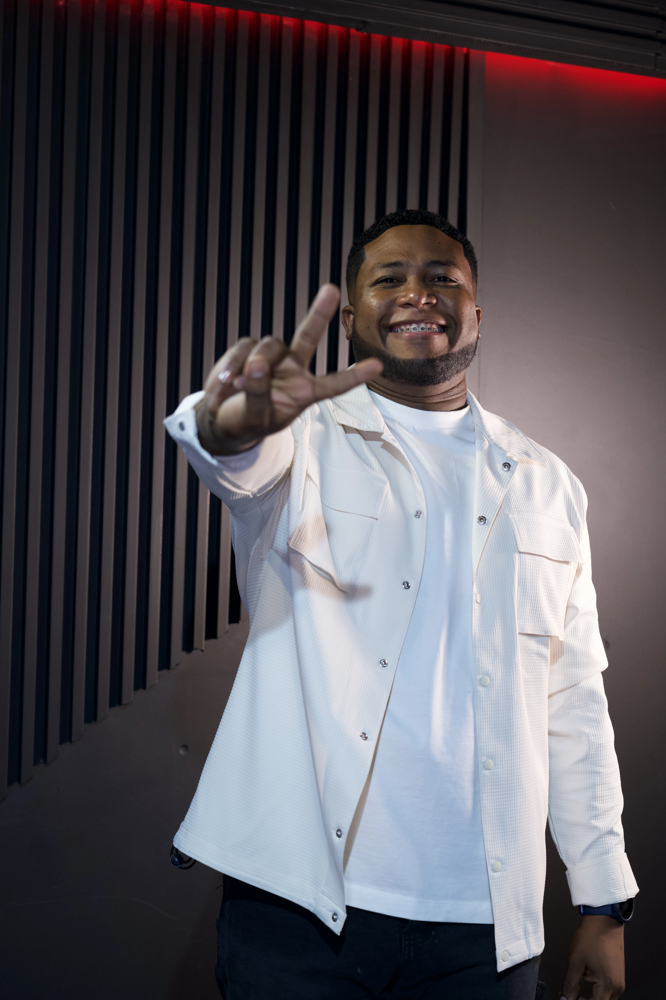
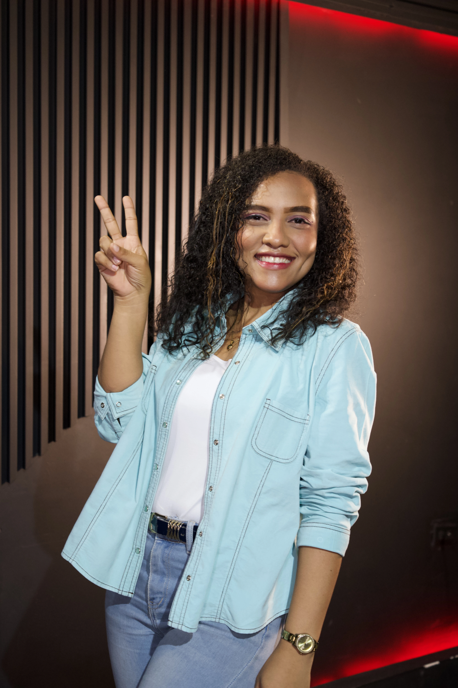

HAY UN LUGAR PARA TI
Únete a Generación Reformadora
Cuéntanos quién eres y te conectamos con el líder que te va a acompañar.
«Venid en pos de mí, y os haré pescadores de hombres».
Mateo 4:19 · RVR1960

TU LÍDER
Luis Cuero
Pasión y firmeza
Luis acompaña a los varones de Generación Reformadora en su caminar con Dios. Escríbele: te va a recibir, responder tus dudas y contarte cuándo y dónde nos reunimos.
Escríbele a Luis
TU LÍDER
Helen Haus
Intensidad y Constancia
Helen acompaña a las doncellas de Generación Reformadora en su caminar con Dios. Escríbele: te va a recibir, responder tus dudas y contarte cuándo y dónde nos reunimos.
Escríbele a Helen